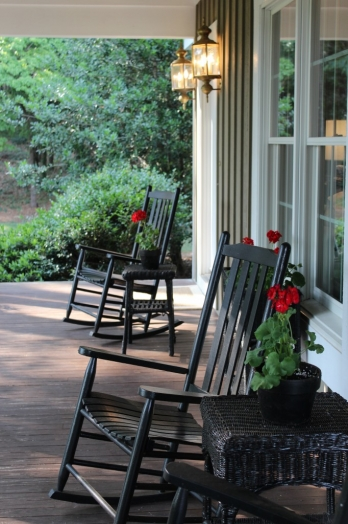

.png)
.PNG)
.PNG)
.PNG)
.PNG)
.PNG)
.JPG)
.JPG)
.PNG)
.PNG)



I know my blog is named Talk of the House, but with the exception of the porch photograph above and one picture of a party below, this is not going to be a house post today. This is going to be a for me post. You see, in the last three weeks, we have had our middle child graduate from college, our youngest child graduate from high school, one niece graduate from high school, and another niece graduate from college. The last three weeks have been filled with every kind of school activity imaginable as we have rushed from one event to another – all with the reminder that this will be the last time we ever attend one of these echoing through our heads. There has been no time to slow down whatsoever. This post – with its 30 photographs – is to help me remember and savor those moments. I would love for you to come along, but I totally understand if you get off the train now. This is definitely a “momma’s writing” today – not a pretty house post.
The whirl of activity started on the evening of Monday, May 7. Our daughter had her National Honor Society awards night at the high school. I did not take my camera that night, so no photos from that,
but I did take it on Thursday night, May 10…
for her performance as Mulan in our high school’s spring musical. In this scene she is singing Reflection, my favorite song from the Disney production. The photograph below is during their finale.
 If you remember seeing her in the prom post, her hair was blonde just a few weeks ago. She had it dyed darker for the part of Mulan. After months of practice, they performed the musical Thursday, Friday, and Saturday, May 10-12.
If you remember seeing her in the prom post, her hair was blonde just a few weeks ago. She had it dyed darker for the part of Mulan. After months of practice, they performed the musical Thursday, Friday, and Saturday, May 10-12.
The following day, Sunday, May 13 was Mother’s Day- a rainy one at that. Our church held its baccalaureate service for graduating seniors, and our daughter went with her grandparents. Unfortunately, my husband and I could not be there because we had to be in Atlanta for this….
Honors Ceremony for the College of Arts and Sciences at Emory University. Our son achieved the highest academic award that Emory University bestows – something not to be missed – and a nice Mothers’ Day gift. Due to the rain, the reception following the ceremony was moved from a tent outside the church to inside one of the math buildings. We met his favorite professor there and then went to dinner at one of my favorite Atlanta restaurants – Parish.
 The interior is a beautifully done refurbished factory, and the food is delicious.
The interior is a beautifully done refurbished factory, and the food is delicious.
(beet salad -top left, veggie plate – top right, fried chicken – bottom left, interior – bottom right)
The beet salad that I ordered has to be THE best salad I have EVER eaten…would love to have the recipe for that. My veggie plate was also yummy, but the best dish was the fried chicken on creamy grits that one of my son’s friends ordered. We all had a taste of it and the chocolate mousse dessert. (I’m slowing down to savor the food here.)
We stayed at our older son’s apartment in Atlanta that night and spent 5 hours at Emory University the next day (Monday, May 14) for their commencement ceremony.
This was the view of part of the seating from one of the upper windows in a building nearby.
It rained again. 
Our Emory grad. 🙂
The next day, Tuesday May 15 we were back home. That evening was spent enjoying our daughter’s last symphonic band concert in high school and a band award ceremony. Their performance of five movements of the Star Wars theme was amazing!
She had been the drum major for the last 2 years and received both the Director’s Choice award and the Students’ Choice award for her senior year. Needless to say, we are very proud of her.
I had a baby shower to attend the evening of Wednesday, May 16 – forgot my camera, so no pictures from that.
Our high school held its Seniors’ Awards ceremony on Thursday, May 17. This is when all of the scholarships that the students have earned are recognized. First Honor students (with high gpa’s) are also given recognition at this time by the superintendent of the system. It was a very nice ceremony.
(clockwise from upper left: recognition as First Honor graduate, Academic Scholarships awarded, a very special school staff member, Music Scholarship awarded)
On Sunday, May 20 we traveled back to Atlanta for lunch with all of my side of the family and my niece’s high school graduation that afternoon. My niece graduated with honors, and they had an awesome commencement speaker. 🙂
When we finished there, we drove to Emory to move our son’s furniture out of the house he had been sharing with the Emory rowing crew. Luckily one of his roommates was there to help. The truck was loaded, and then it started to rain. So they quickly threw a tarp over it all, and we waited an hour for the storm to pass.
(truck partially loaded, son with a silly grin and his helpful roommate)
Around 10:30 that night we arrived home with the truck full of furniture. Too tired to unpack it all, it was parked in the garage until the next day. I wrote thank you notes to my daughter’s teachers and wrapped gifts for them before going to bed.
On Thursday, May 24 another of our nieces graduated from college. Unfortunately my husband and I could not attend, but our son (the Emory grad 🙂 ) drove my parents to the ceremony outside of Atlanta.
Then finally we made it to Saturday, May 26, and it was our daughter’s turn to graduate. We held a party at our home late in the afternoon…
then headed to the commencement ceremony an hour early. With close to 300 graduates and thousands of guests, it can be difficult to find a seat close to the front. We had been keeping a major secret from all of our family members. There was one adult musical performance and one student musical performance for the ceremony, and our daughter and a friend of hers (the young man who played Mushu in their performance of Mulan) were it. They were going to be singing Carol Bayer Sager’s The Prayer. 
(Sorry for the quality here. We were not close enought to get a good photo from my camera, so this one and those below are still shots from the video camera.) It turned out to be a fun surprise for all of our relatives, and the kids did a wonderful job – especially considering that there were thousands of people there watching them. Do you know how hard it was for this momma (who cries at parades and fireworks) to hold it together for her youngest child singing that song? Goodness, I tear up when I hear Josh Groban sing it – much less my graduating baby daughter!
But we all made it through….
and then they were graduates.

We visited with family and friends outside the arena after the ceremony. It was bittersweet because one of our sons’ friends (far right) who is like another son to us, left on a flight today for a year long stay in Taiwan (on a scholarship). He was the one who went with us to the Emory graduation and ordered the fried chicken dinner at Parish. 🙂
(left to right – oldest son, middle son, baby girl, friend of the family)
And this one left on a flight today for a week long stay in New York City with a dear friend and an even dearer aunt of the friend. Lucky ladies! 
She will finally get to see Wicked… best Broadway musical ever.
And I will finally get to slow down, sit in one of those rockers on my front porch, and enjoy a cup of coffee and some chocolate chip cookies (from my thoughtful sister-in-law).

And that my friends, was three weeks in May. 🙂
Thank you for coming along.


.PNG)
Hi Kelly! Just read this post. We also just recently had our youngest graduate Nursing School at the Univ of Miami and our 3rd daughter complete grad school at the Univ of Chicago. In just 3 weeks time we flew to both from our Texas home. It was crazy but glorious!
Congrats on all the accomplishments! It is a wonderful feeling for a parent!
————————————————————————–
Wow, and I thought WE had it busy! I can’t imagine trying to fly all over the country for that too. Congratulations on your children’s accomplishments!
Kelly
Wow, what a special post, Kelly! I love the home decor posts, but sometimes, it is so nice to hear about what’s really going on in someone’s head, life and family. Home decor is fun, but it is just something we do, it doesn’t define who we are. Thanks for opening up and sharing 🙂
————————————————————————-
Lindsay, I so appreciate your comments. There was ALOT going on in my head, life and family this month. 🙂 Glad you enjoyed reading all about it. Sometimes it is therapeutic to get it all out of my head and onto “paper.”
Kelly
Hey Kelly! I teared up reading about your “month”… So proud of Jonathan and, of course, Hayley! (She isn’t my little first grader anymore!) Thanks for sharing your site with me. I can’t wait to see more! 🙂
———————————————————————-
Oh Susan, you are going to make me tear up too. Stop it right now! No she is not your little first grader anymore…and boy did she grow up fast. It seemed faster than the boys to me.
So glad you found the site and time to read. Please do come again. I’ll be posting about the graduation party late tomorrow night or early Wed. morning.
Kelly
Whew! That was sure a whirlwind of activities for you! What beautiful (girl) and handsome (boy) children you have! I’m sure you are both very proud parents right now! I enjoyed following along on your three weeks of May and to top it all off…that last picture of the daisies! I wish I had that picture in my last post! Ha, ha!
————————————————————————
Kim, after I hit “publish” last night, I jumped over to your blog and saw your neat post on daisies. I had the EXACT same thought that you might like that last photo. 🙂 Thank you for reading through the “whirlwind of activities”, and thank you for your sweet comments about our children. We have certainly been blessed.
Kelly
House stuff or not… I love a little of the personal, too. It’s nice to know bits of the people and their stories as well as their design sensibilities. Congratulations on raising, what appear to be, well-rounded, contributing members of society!
———————————————————————-
Julianna, I like to know the people behind the blogs too…just didn’t know if I was the only one who did! lol Thank you for making your way through the eternally long post today and leaving your kind words here. The kids are well rounded…just waiting to see if they will contribute to society! The Emory grad has some student loans he needs to start paying off to “contribute to society.” 🙂
Kelly